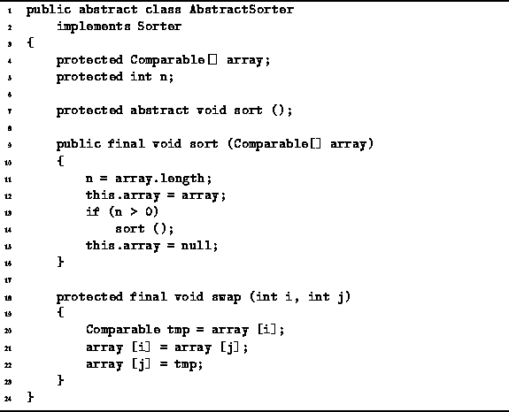

Data Structures and Algorithms
with Object-Oriented Design Patterns in Java
Data Structures and Algorithms
with Object-Oriented Design Patterns in Java
Program  defines the AbstractSorter class.
The AbstractSorter class implements the Sorter interface
defined in Program .
The AbstractSorter comprises the two fields, array and n,
the concrete methods swap and sort(Comparable[]),
and the no-arg abstract method sort().
Since the no-arg sort method is an abstract method,
an implementation must be given in a derived class.
defines the AbstractSorter class.
The AbstractSorter class implements the Sorter interface
defined in Program .
The AbstractSorter comprises the two fields, array and n,
the concrete methods swap and sort(Comparable[]),
and the no-arg abstract method sort().
Since the no-arg sort method is an abstract method,
an implementation must be given in a derived class.

Program: AbstractSorter class.
The sort(Comparable[]) method does not sort the data itself. It is the no-arg sort method, which is provided by a derived class, that does the actual sorting. The sort(Comparable[]) method merely sets things by initializing the fields of AbstractSorter as follows: The array field refers to the array of objects to be sorted and the length of that array is assigned to the n field.
The swap method is used to implement most of the sorting algorithms presented in this chapter. The swap method takes two integers arguments. It exchanges the contents of the array at the positions specified by the arguments. The exchange is done as a sequence of three assignments. Therefore, the swap method runs in constant time.
 Copyright © 1998 by Bruno R. Preiss, P.Eng. All rights reserved.
Copyright © 1998 by Bruno R. Preiss, P.Eng. All rights reserved.